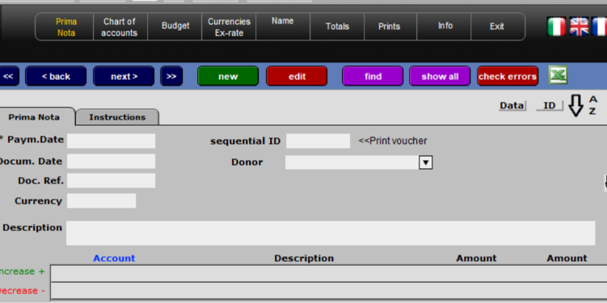

DESY - Project Accounting & Financial Coordination
A practical foundation for managing project accounts, budget lines, expenses and financial coordination across multiple activities.
Practical Project Accounting Made Simple
DESY is designed to help project teams and organizations manage project finances with clarity. It provides a systematic way to follow accounts, track budget lines, monitor expenses and coordinate finances across activities—without unnecessary complexity.
What DESY Does
DESY helps you:
Track Project Accounts
Maintain clear visibility of how money flows through your projects and where it's allocated.
Manage Budget Lines
Organize expenses by activity, cost category or funding source with accuracy and control.
Coordinate Finances
Ensure financial coordination across multiple projects, teams and organizational units.
See DESY in Action
DESY's interface is designed for clarity. Every element serves a practical purpose: account tracking, budget line organization, expense monitoring and financial coordination—all in one place.
Whether you're managing a single project or coordinating finances across multiple activities, DESY keeps information organized and accessible.

Practical Use Cases
For Project Managers
Maintain clear visibility of how project budgets are being spent, identify where money is allocated, and ensure financial coordination across activities.
For Finance Teams
Track expenses systematically, organize costs by budget line or activity, and provide clear financial reports to stakeholders and donors.
For Multi-Project Organizations
Coordinate finances across several projects simultaneously, maintain visibility of funds across organizational units, and ensure consistent accounting practices.
For Donors and Funders
Receive clear visibility into how project funds are allocated and spent, with organized documentation and clear accounting records.
Frequently Asked Questions
What is DESY used for?
DESY is used for project accounting and financial coordination. It helps teams follow project accounts, manage budget lines, track expenses and coordinate finances across multiple activities.
Who should use DESY?
DESY is designed for NGOs, foundations, and project teams that need to track project accounts and manage financial coordination across multiple activities or programs.
Can DESY handle multiple projects?
Yes. DESY is designed to manage project accounts and finances across multiple projects and budget lines simultaneously.
Is DESY suitable for small NGOs?
Yes. DESY is part of the DESYNET toolkit, which is made available through a simple annual contribution, making it accessible even to small NGOs and associations.
How does DESY integrate with other DESYNET tools?
DESY works as the foundation of the DESYNET toolkit. It receives budget information from PREPPY (budget forecasting) and provides cost data to GEKO (sustainability analysis). It also coordinates with RIKO, AIDA and PAS for comprehensive project management.
Ready to Simplify Project Accounting?
Contact Paolo to discuss how DESY can help your organization track project finances with clarity and control.
Get in Touch About DESY